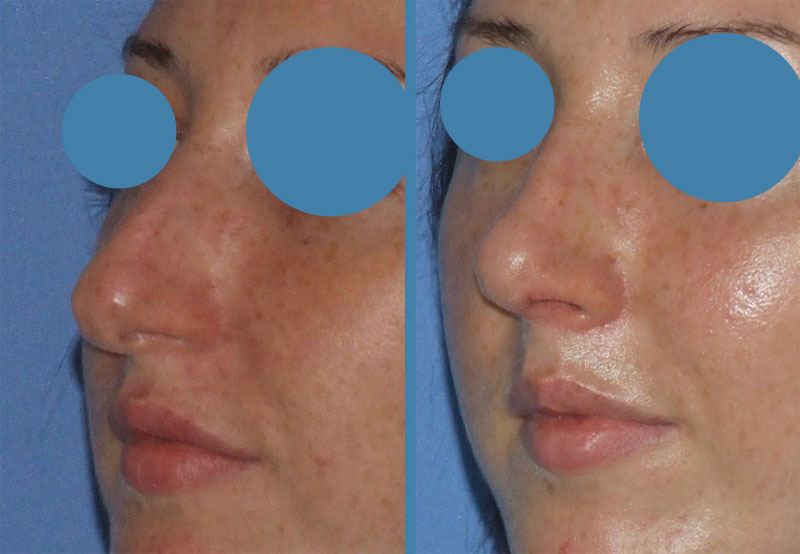

      <script>
        jssor_1_slider_init = function() {
            
            var jssor_1_options = {
              $AutoPlay: true,
              $SlideWidth: 600,
              $Cols: 2,
              $Align: 100,
              $ArrowNavigatorOptions: {
                $Class: $JssorArrowNavigator$
              },
              $BulletNavigatorOptions: {
                $Class: $JssorBulletNavigator$
              }
            };
            
            var jssor_1_slider = new $JssorSlider$("jssor_1", jssor_1_options);
            
            //responsive code begin
            //you can remove responsive code if you don't want the slider scales while window resizes
            function ScaleSlider() {
                var refSize = jssor_1_slider.$Elmt.parentNode.clientWidth;
                if (refSize) {
                    refSize = Math.min(refSize, 800);
                    jssor_1_slider.$ScaleWidth(refSize);
                }
                else {
                    window.setTimeout(ScaleSlider, 30);
                }
            }
            ScaleSlider();
            $Jssor$.$AddEvent(window, "load", ScaleSlider);
            $Jssor$.$AddEvent(window, "resize", $Jssor$.$WindowResizeFilter(window, ScaleSlider));
            $Jssor$.$AddEvent(window, "orientationchange", ScaleSlider);
            //responsive code end
        };		
    </script>
<section id="aboutUs"><!--Aboutus-->
<div class="inner_wrapper">
  <div class="container">
	<h3>Nas Incovoiat (nas hispanic)</h3>
    <div class="inner_section">
	<div class="row">
      <div class=" col-lg-4 col-md-4 col-sm-4 col-xs-12 pull-right">
    <div id="carousel-example-generic" class="carousel slide" data-ride="carousel">
      <!-- Indicators -->
      <ol class="carousel-indicators">
        <li data-target="#carousel-example-generic" data-slide-to="0" class="active"></li>
        <li data-target="#carousel-example-generic" data-slide-to="1"></li>
        <li data-target="#carousel-example-generic" data-slide-to="2"></li>
      </ol>

      <!-- Wrapper for slides -->
      <div id= "carousel"class="carousel-inner">
        <div class="item active">
          
          <div class="carousel-caption">
            <h2>Heading</h2>
          </div>
        </div>
        <div class="item">
        		<script>	
									var dir = "img/incovoiat";
									var fileextension = ".jpg";
									$.ajax({
									//This will retrieve the contents of the folder if the folder is configured as 'browsable'
									url: dir,
									success: function (data) {
									//Lsit all png file names in the page
									$(data).find("a:contains(" + fileextension + ")").each(function () {
									var filename = this.href.replace(window.location.host, "").replace("http:///ArgentinaVidrascu", "");
									debugger;
									$("carousel").append($(	"</img>"));
								});	}});			
					</script>		
        </div>

		
      </div>

      <!-- Controls -->
      <a class="left carousel-control" href="#carousel-example-generic" data-slide="prev">
        <span class="glyphicon glyphicon-chevron-left"></span>
      </a>
      <a class="right carousel-control" href="#carousel-example-generic" data-slide="next">
        <span class="glyphicon glyphicon-chevron-right"></span>
      </a>
    </div>

  </div>
      	<div class=" col-lg-7 col-md-7 col-sm-7 col-xs-12 pull-left">
        	<div class=" delay-01s animated fadeInDown wow animated">		
				<p>In general, la acest tip de nas structura este următoarea:</p>
				<ul>
					<li>Unghiul dintre frunte si nas este&nbsp; mic</li>
					<li>Oasele nazale sunt prea lungi.</li>
					<li>Cartilajele alare superioare sunt inalte. Septul este deviat si
					inalt.</li>
					<li>Domul&nbsp; nazal ( varful nasului), de cele mai multe ori,
					este orientat in jos.</li>
					<li>Columela atarna astfel incat se poate vedea, din lateral,
					partea ei intranarinara cu fire de par.</li>
				</ul>
				<p>Schema de reconstrucție este următoarea.</p>
				<p>Se face incizie la nivelul columelei ( deasupra buzei) si se
				deschide nasul astfel încat sa avem acces la oasele nazale si
				cartilaje. Se desfac cartilajele alare superioare pentru a avea
				acces la septul nazal. Se decoleaza mucoasa de pe ambele parti ale
				septului. Daca exista disfunctii respiratorii din cauza deviatiei
				de sept -se scoate partea deviata a septului din care se modeleaza
				bucati pentru a umple&nbsp; unghiul nazofrontal. Se coase
				septul.</p>
				<p>Se reduc in inaltime oasele nazale cu dalta si lovituri usoare
				de ciocan, cu pile de diferite dimensiuni ale asperitatilor, se
				fractureaza, cu dalta fina,&nbsp; lateral si superior, oasele
				nazale si se repozitionează pe linia de mijloc piramida nazala.</p>
				<p>Se reduc in inaltime septul si cartilajele superioare alare
				astfel încat dorsul nasului sa devina o linie dreapta la
				barbati&nbsp; si usor curba la femei. In acest moment operator,
				chirurgul se asigura ca nu raman denivelari si ca piramida nazala
				ia o forma armonioasa.</p>
				<p>Unghiul dintre frunte si nas se&nbsp; corecteaza cu bucati&nbsp;
				de cartilaj ( grefe) inserate aici sub piele.</p>
				<p>Varful nasului e ridicat, cat e necesar, cu ajutorul inciziilor
				și a suturilor specifice.</p>
				<p>E foarte important sa fie rectificata, in acelasi timp operator,
				si deviatia de sept.</p>
				<iframe width="100%" height="50%" src="http://www.youtube.com/embed/_IE_Xw9EeWc" frameborder="0" allowfullscreen></iframe>	
			</div>
		</div>
  </div>
  </div>  
    </div>
  </div> 
</section>

